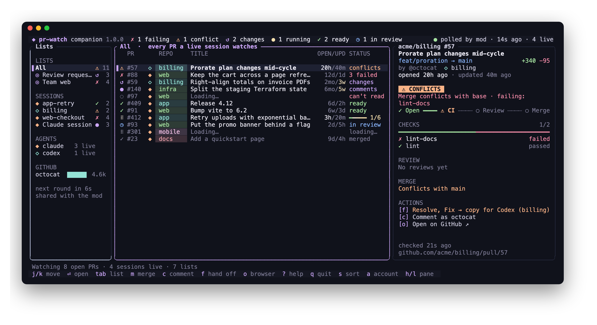

Live CI, by name
Which checks run, which wait, which failed, counted by the latest run of each job. The card animates while anything moves.
prw is a PR manager for the terminal: your own open PRs, your saved GitHub searches and every PR your agents touch, sorted by what needs you. Open one full size to reply, resolve, approve and merge, without opening GitHub.

A Claude Code mod · MIT
pr-watch keeps a live pane of every GitHub pull request your Claude Code session touches: CI as it runs, reviews as they land, conflicts the moment they appear. When something fails, one button drafts the fix for Claude. When it's ready, merge it from the pane.
Claude Code 2.1.287 or later, and the GitHub CLI logged in. No restart.
What it does
Each card leads with what matters most: merge conflicts first, then failing or running CI by name, then review, then whether GitHub will let it merge. A toast tells you when that changes.
Which checks run, which wait, which failed, counted by the latest run of each job. The card animates while anything moves.
Failing logs, trimmed to the error, drafted in your prompt box for Claude. Nothing is sent until you press Enter.
Unresolved review threads by file and line, with replies and who wrote them, drafted the same way.
Squash, rebase or merge in your default method, always confirmed first. Auto-merge while checks are still running.
Who approved, who asked for changes, how many threads are open and outdated. One toast per new review.
A merge conflict outranks everything else on the card, so the thing blocking you is the first thing you read. Resolve with Claude drafts the ask to merge the base in.
PRs Claude opens, pushes to, reviews or merges are picked up on their own. Paste any PR link or use /pr-watch for the rest.
Docked beside the conversation in a wide terminal, or a few lines above the prompt when space is tight.
A quiet line and one toast per new version, checked on the poll it already makes, so it costs no extra request.
Fix · Address · Resolve with Claude
Press Fix with Claude on a failing card and pr-watch collects the failing checks and the failed steps' logs, trims them to the part that matters, and drafts the ask in your prompt box. Address with Claude does the same for unresolved review threads, by file and line, and Resolve with Claude for a branch that conflicts with its base: merge the base in, keep what both sides meant.
It's a draft: read it, change it, and nothing reaches Claude until you press Enter. It never asks Claude to push, merge or reply on GitHub for you.
Try it: press Fix with Claude on the card.
Merge from the pane
Once GitHub would merge the PR and your account can write to the repo, the card offers the merge, in your default method or the first the repo allows. It always asks first. Still waiting on checks? Turn on auto-merge instead, and GitHub merges it the moment everything passes.
Try it: press Squash & merge.
How it polls
Thirty sessions watching thirty PRs cost about one GitHub call every 20 to 60 seconds, not thirty. Sessions announce what they watch; one of them takes a short lease, asks GitHub for all of it in batched GraphQL, and every session reads the shared result.
The gh meter under the pane shows how much of the hourly budget each of your gh logins has left, GraphQL on top and REST below, with the time until it refills. Running low, pr-watch backs off that login on its own. Press ? for what it all means.
Themes
Switch with /pr-watch theme tide and every session follows. Each theme has a light and a dark variant that follows Claude Code's own.
Install
Needs Claude Code 2.1.287 or later and the GitHub CLI logged in (gh auth login). In Claude Code, run:
Answer y to add the marketplace and press Enter for user scope. It's active at once. Then open a PR as usual, or watch any PR with:
| Setting | What it does | Default |
|---|---|---|
| theme | classic, solid, minimal, neon, retro, tide or aurora | classic |
| layout | pane beside the conversation, or a band above the prompt | pane |
| poll_active_seconds | how often GitHub is asked while CI runs | 20 |
| poll_idle_seconds | how often when nothing is moving | 60 |
| update_notice | say when a new version is out | on |